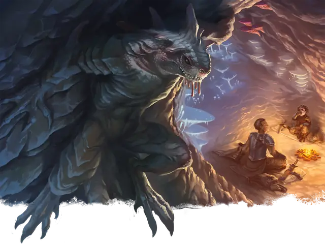

Троглодит
Troglodyte
Среднее Чудовище, Хаотичное Злое

Класс Защиты 11 Инициатива +0 (10)
Хиты 13 (2к8 + 4)
Скорость 30 футов, Лазания 30 футов
| мод | спас | ||
|---|---|---|---|
| СИЛ | 14 | +2 | +2 |
| ЛОВ | 10 | +0 | +0 |
| ТЕЛ | 14 | +2 | +2 |
| мод | спас | ||
|---|---|---|---|
| ИНТ | 6 | −2 | −2 |
| МДР | 10 | +0 | +0 |
| ХАР | 6 | −2 | −2 |
Чувства Тёмное зрение 60 футов, пассивное Восприятие 10
Языки Троглодитский
Опасность 1/4 (50 опыта; БВ +2)
Особенности
Вонь. Спасбросок Телосложения: Сл 12, любое существо (кроме троглодита), которое начинает свой ход в 5-футовой Эманации, исходящей от троглодита. Провал: Цель получает состояние Отравленный до начала её следующего хода. Успех: Цель получает иммунитет к Вони любых троглодитов на 1 час.
Чувствительность к солнечному свету. Находясь на солнечном свету, троглодит совершает с Помехой все проверки характеристик и броски атаки.
Действия
Раздирание. Бросок рукопашной атаки: +4, досягаемость 5 фт. Попадание: 5 (1к6 + 2) Рубящего урона.
Бонус мастерства +2
Среда обитания Подземье
Сокровища Оружейные